201861
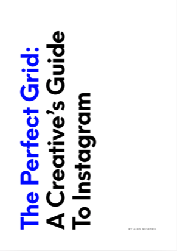
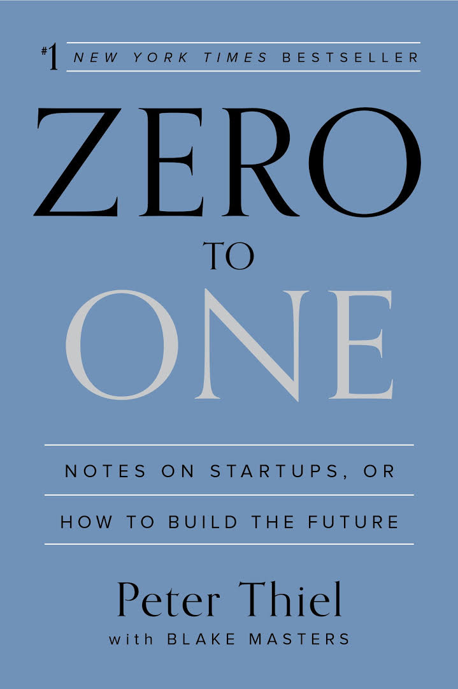
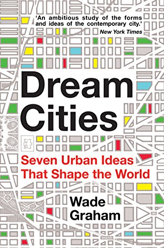
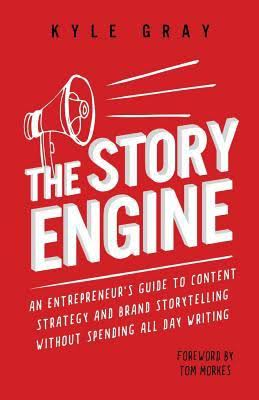
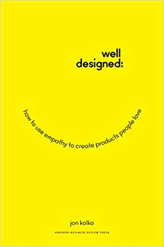
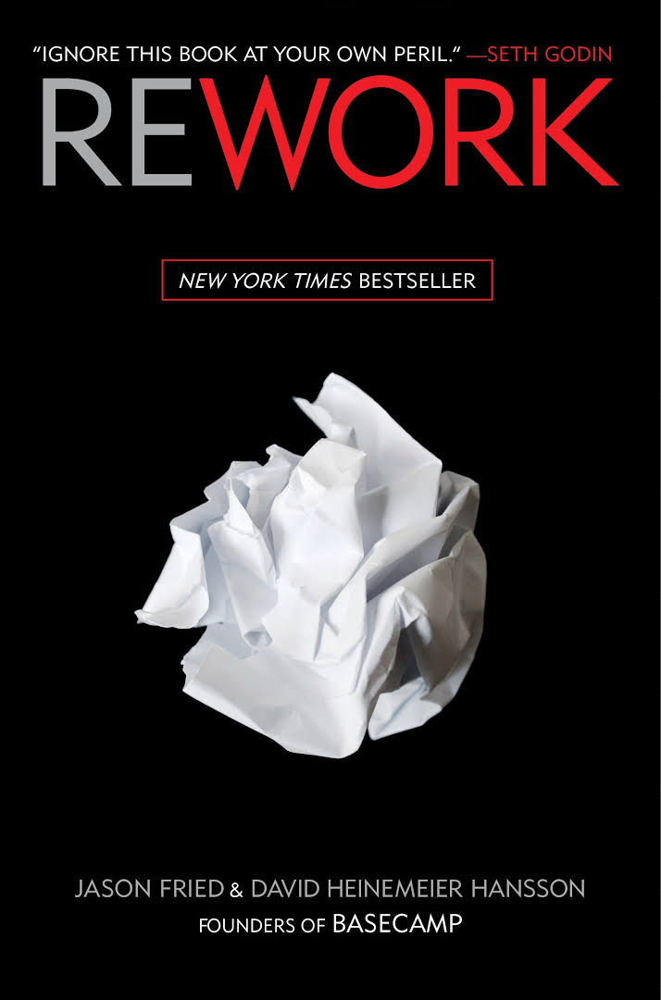
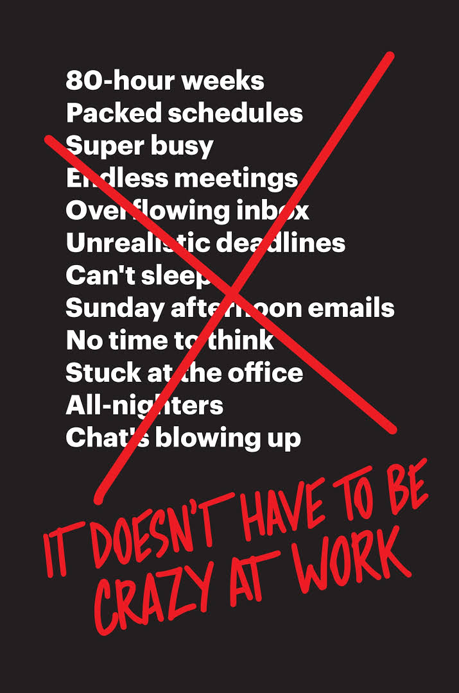
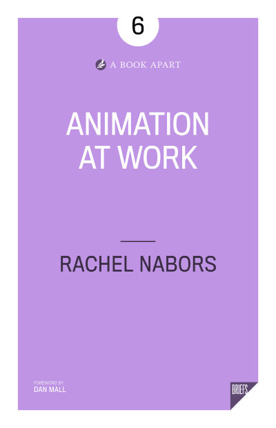
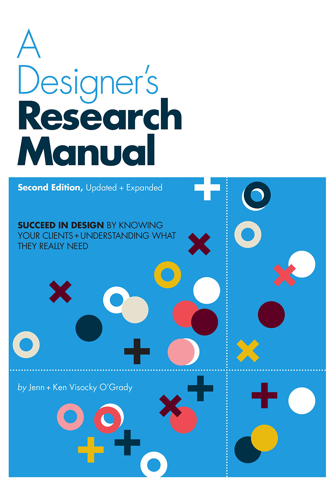
 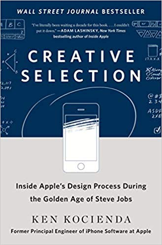
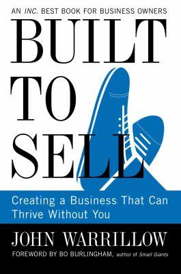
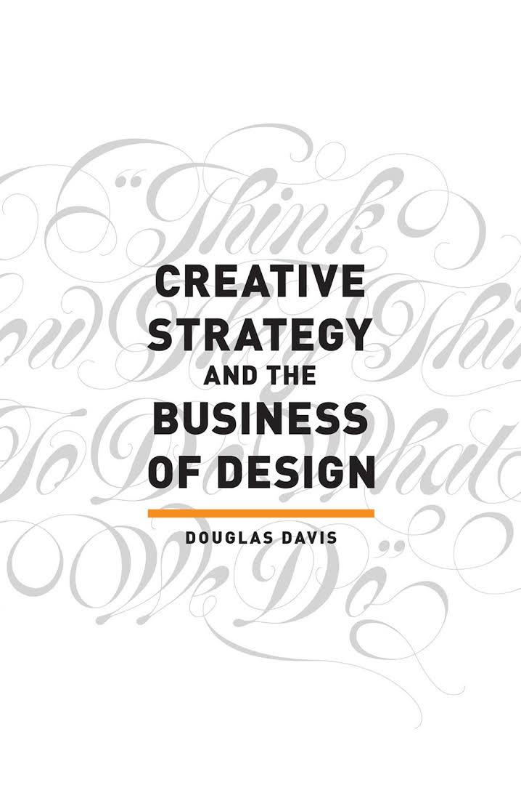
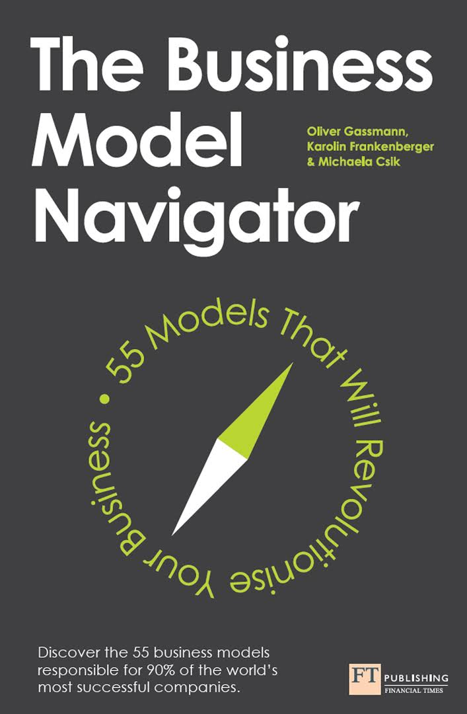
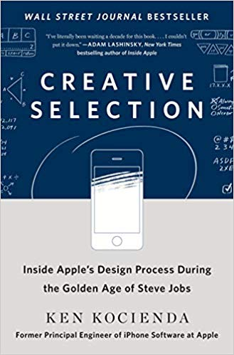
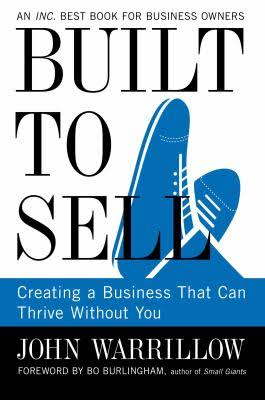
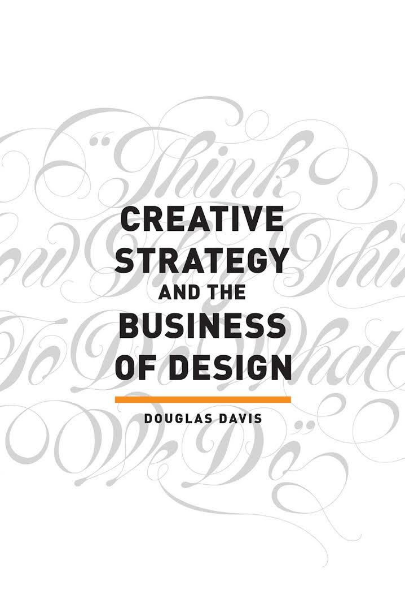
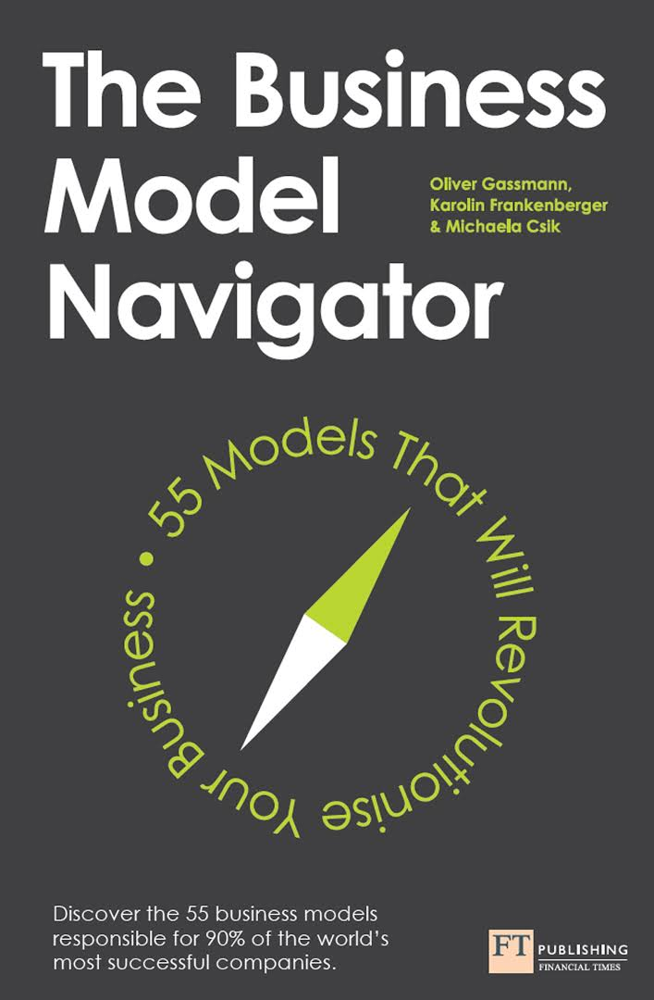


- Dan M. Brown Practical Design Discovery
- Ales Nesetril The Perfect Grid: A Creative’s Guide to Instagram
- ★Lilly Haines-Gadd TRIZ For Dummies
- ★Peter Thiel Zero to One: Notes on Startups, or How to Build the Future
- Виктор Пелевин Чапаев и Пустота
- Wade Graham Dream Cities: Seven Urban Ideas That Shape the World
- Виктор Пелевин Числа
- Mike Lydon Tactical Urbanism: Short-term Action for Long-term Change
- Kyle Gray The Story Engine: An entrepreneur's guide to content strategy and brand storytelling without spending all day writing
- Jon Kolko Well-Designed: How to Use Empathy to Create Products People Love
- Анна Борисова Креативщик
- Nick Srnicek Inventing the Future: Postcapitalism and a World Without Work
- Wayne C. Booth The Craft of Research, Fourth Edition
- Виктор Пелевин t
- Виктор Пелевин Ананасная вода для прекрасной дамы
- ★Jason Fried Rework
- Tracy Arrington 101 Things I Learned in Advertising School
- ★Jason Fried It Doesn't Have to Be Crazy at Work
- Charles Montgomery Happy City: Transforming Our Lives Through Urban Design
- Rachel Nabors Animation at Work
- Josh Clark Designing for Touch
- Charles R. Wolfe Urbanism Without Effort
- Dominik Schendel Berlin: Architectural Guide
- Visocky O', Jenn Grady, Ken Grady A Designer's Research Manual, 2nd edition, Updated and Expanded
- Jay Samit Disrupt You!: Master Personal Transformation, Seize Opportunity, and Thrive in the Era of Endless Innovation
- Russ Perry The Sober Entrepreneur: Change Your Family Tree
- ★Ken Kocienda Creative Selection: Inside Apple's Design Process During the Golden Age of Steve Jobs
- Judy Bartkowiak Market Research In A Week: Market Research In Seven Simple Steps
- ★John Warrillow Built to Sell: Creating a Business That Can Thrive Without You
- Douglas Davis Creative Strategy and the Business of Design
- Oliver Gassmann The Business Model Navigator: 55 Models That Will Revolutionise Your Business
- ★Laurent Garnier, David Brun-Lambert Electrochoc
- Duncan Clark Alibaba: The House That Jack Ma Built
- Аллен Карр Легкий способ бросить курить
- Alan Klement When Coffee and Kale Compete: Become great at making products people will buy
- ★Paul Midler What's Wrong with China
- Johan Nylander Shenzhen Superstars: How China’s smartest city is challenging Silicon Valley
- ★Kenya Hara Designing Design
- Bill Franks Taming The Big Data Tidal Wave
- Gary Kawasaki, Michele Moreno Rules For Revolutionaries
- ★Blair Enns Pricing Creativity: A Guide to Profit Beyond the Billable Hour
- Joseph DeSetto The Business of Design
- Zack Burt, Jay El-Kaake The Software Engineer's Guide to Freelance Consulting
- Michael Moshiri Never Chase Clients Again
- Илья Бирман Пользовательский интерфейс
- Trish Bertuzzi The Sales Development Playbook
- Ken Dailey The Lean Manufacturing Pocket Handbook
- Scott Pollack What, Exactly, Is Business Development?: A Primer on Getting Deals Done
- Giff Constable Talking to Humans
- David Heinemeier Hansson, Jason Fried Remote: Office Not Required
- Kenneth W. Dailey The Kaizen Pocket Handbook
- Jon Kolko How I Teach: Reflecting on fifteen years in design education
- Sherran S. Spurlock Business Development: A Practical Guide for the Small Professional Services Firm
- ★Blair Enns The Win Without Pitching Manifesto
- Gregory V. Diehl, Alex Miranda Brand Identity Breakthrough
- Rohit Bhargava Non-Obvious 2018 Edition: How To Predict Trends and Win The Future
- ★ Robert Maurer The Spirit of Kaizen: Creating Lasting Excellence One Small Step at a Time
- Dan Mall Pricing Design
- Shane Snow Smartcuts: How Hackers, Innovators, and Icons Accelerate Success
201727
- ★David Gibson The Wayfinding Handbook: Information Design for Public Places
- Philip Jodidio Hadid (Taschen Basic Architecture)
- Charles Duhigg The Power of Habit: Why We Do What We Do in Life and Business
- ★Gabriel Weinberg, Justin Mares Traction: A Startup Guide to Getting Customers
- Greg McKeown Essentialism: The Disciplined Pursuit of Less
- Nir Eyal Hooked: How to Build Habit-Forming Products
- Lee Iacocca, William Novak Iacocca: An Autobiography
- Sam Walton, John Huey Sam Walton: Made In America
- Kenya Hara White
- ★Mark Forster Do It Tomorrow and Other Secrets of Time Management
- ★Cali Ressler, Jody Thompson Why Work Sucks and How to Fix It
- Hong Kong: Monocle Travel Guide
- ★Jason Fried, Heinemeier David Hansson Getting Real: The Smarter, Faster, Easier Way to Build a Web Application
- Ethan M. Rasiel The McKinsey Way
- ★Jan White Editing by Design: For Designers, Art Directors, and Editors
- Адриан Форти Объекты желания. Дизайн и общество с 1750 года
- ★Дэвид Огилви Огилви о рекламе
- Magdalena Droste Bauhaus 1919-1933
- David Airey Work for Money, Design for Love
- Ян Чихольд Hовая типографика
- ★Кристофер Александер Язык шаблонов
- ★Massimo Vignelli The Vignelli Canon
- Peter Merholz, Kristin Skinner Org Design for Design Orgs: Building and Managing In-House Design Teams
- ★Rohit Bhargava Non-Obvious 2017: How To Think Different, Curate Ideas and Predict The Future
- Sam Altman Startup Playbook
- ★The Monocle Guide to Good Business
- Anthony Dunne and Fiona Raby Speculative Everything: Design, Fiction, and Social Dreaming
- ★Arthur Gensler Art's Principles: 50 years of hard-learned lessons in building a world-class professional services firm
201639
- Robert Curedale Design Thinking Pocket Guide: 2nd Edition
- Duff McDonald The Firm: The Story of McKinsey and Its Secret Influence on American Business
- Robert Maurer One Small Step Can Change Your Life: The Kaizen Way
- Алексей Юсев Кинополитика. Скрытые смыслы современных голливудских фильмов
- Marc Stickdorn and Jakob Schneider This is Service Design Thinking: Basics, Tools, Cases
- A Guide to the Business Analysis Body of Knowledge
- How to Start a Startup: The Silicon Valley Playbook for Entrepreneurs
- Андрей Шляхов Китай и китайцы. Привычки. Загадки.
- Виктор Пелевин Лампа Мафусаила, или Крайняя битва чекистов с масонами
- Alexander Osterwalder Business Model Generation: A Handbook for Visionaries, Game Changers, and Challengers
- ★Максим Ильяхов, Людмила Сарычева Пиши, сокращай. Как создавать сильные тексты.
- David McCandless Visual Miscellaneum: A Colorful Guide to the World's Most Consequential Trivia
- Golden Krishna The Best Interface Is No Interface: The simple path to brilliant technology
- Michiel Maandag, Liisa Puolakka The Only Book You Will Ever Need on Branding: to start, run and grow your business
- Peter Mayle A Year in Provence
- Samuel Greengard The Internet of Things
- Biz Stone Things a Little Bird Told Me: Creative Secrets from the Co-Founder of Twitter
- ★Mikal Hem How to Be a Dictator: An Irreverent Guide
- Jenny Udale, Richard Sorger The Fundamentals of Fashion Design
- Аркадий Стругацкий, Борис Стругацкий Полдень. XXII век.
- Борис Акунин Инь и Ян
- ★Владимир Аронов Дизайн в культуре ХХ века. 1945-1990.
- Виктор Пелевин Смотритель. Книга 1. Орден желтого флага.
- Виктор Пелевин Смотритель. Книга 2. Железная бездна.
- ★Peter Thiel Zero to One: Notes on Startups, or How to Build the Future
- Richard L. Brandt One Click: Jeff Bezos and the Rise of Amazon.com
- Ryan Holiday Growth Hacker Marketing: A Primer on the Future of PR, Marketing, and Advertising
- Виктор Пелевин Числа
- ★Paul Graham Hackers & Painters: Big Ideas from the Computer Age
- Jake Knapp, John Zeratsky, Braden Kowitz Sprint: How to Solve Big Problems and Test New Ideas in Just Five Days
- Mihaly Csikszentmihalyi Flow: The Psychology of Optimal Experience
- ★Stephen Petranek How We'll Live on Mars
- Marc Kushner The Future of Architecture in 100 Buildings
- ★Ben Horowitz The Hard Thing About Hard Things: Building a Business When There Are No Easy Answers.
- ★Walter Isaacson Steve Jobs
- Alison Coward Effective workshops
- Артём Горбунов Типографика и вёрстка
- Валерий Шанин Как путешествовать
- ★Dominique Loreau L'Art de la Simplicite: How to Live More with Less
201511
- Tobias Rapp Lost and Sound
- Харуки Мураками Охота на овец
- ★Ashlee Vance Elon Musk: Tesla, SpaceX, and the Quest for a Fantastic Future
- Харуки Мураками Бесцветный Цкуру Тадзаки и годы его странствий
- ★Dennis DeSantis Making Music: 74 Creative Strategies for Electronic Music Producers
- Бен Лернер 22:04
- Борис Акунин Левиафан
- Энди Вейр Марсианин
- Малкольм Гладуэлл Гении и аутсайдеры
- ★Ян Гейл Города для людей
- Жан-Мишель Генассия Клуб неисправимых оптимистов